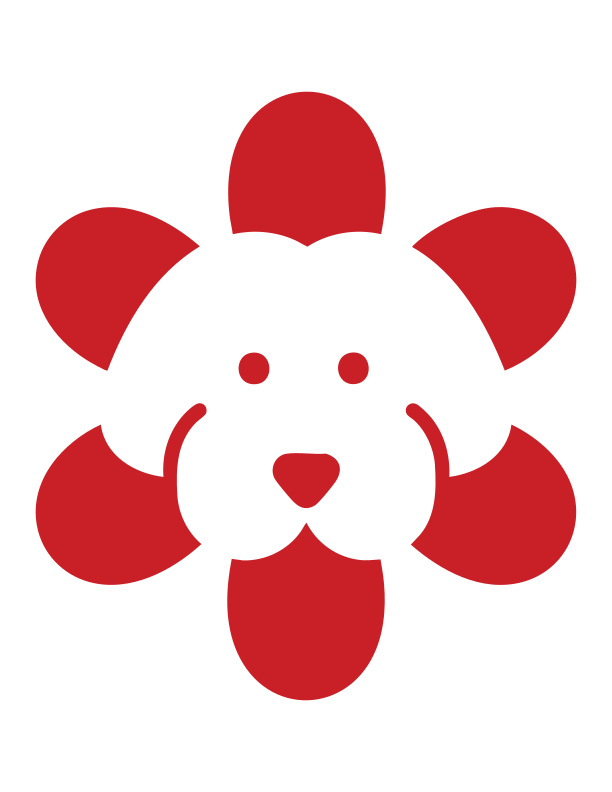

City Stuff
Urban design observations, infrastructure crushes, and practical notes from walking Chicago block by block.
Support Wild Mile
Inspired by bold Americana studio sites: loud colors, sturdy type, and a no-frills wall of good ideas. This is your launchpad for projects, field notes, and useful links.
Urban design observations, infrastructure crushes, and practical notes from walking Chicago block by block.
Support Wild MileOccasional dispatches on creativity, place, style, and whatever else deserves a useful write-up.
Read on SubstackMoodboards, reference photos, and visual rabbit holes—all pinned where they can be re-used.
Browse PinsNeed help with brand direction, storytelling, or visual strategy? Reach out and let's make something honest.
Start a Project